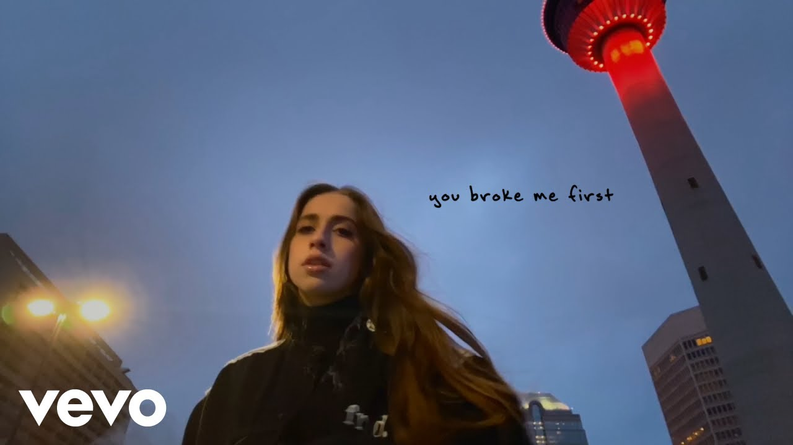

Tate McRae
A L B U M S
all the things I never said (2020)
- 1. stupid
- 2. all my friends are fake
- 3. that way
- 4. tear myself apart
- 5. happy face
TOO YOUNG TO BE SAD (2021)
- 1. bad ones
- 2. rubberband
- 3. slower
- 4. r u ok
- 5. you broke me first
- 6. wish i loved you in the 90s
i used to think i could fly (2022)
- 1. ?
- 2. don't come back
- 3. i'm so gone
- 4. what would you do?
- 5. chaotic
- 6. hate myself
- 7. what's your problem?
- 8. she's all i wanna be
- 9. boy x
- 10. you're so cool
- 11. feel like shit
- 12. go away
- 13. i still say goodnight
THINK LATER (2023)
- 1. cut my hair
- 2. greedy
- 3. run for the hills
- 4. hurt my feelings
- 5. grave
- 6. stay done
- 7. exes
- 8. we're not alike
- 9. calgary
- 10. messier
- 11. think later
- 12. guilty conscience
- 13. want that too
- 14. plastic palm trees
So Close To What (2025)
- 1. Miss Poosessive
- 2. Revolving door
- 3. bloodonmyhands (feat. Flo Milli)
- 4. Dear god
- 5. Purple lace bra
- 6. Sports car
- 7. Signs
- 8. I know love (feat. The Kid LAROI)
- 9. Like I do
- 10. It's ok I'm ok
- 11. No I'm not in love
- 12. Means I care
- 13. Greenlight
- 14. 2 hands
- 15. Siren sounds (bonus)
- 16. Nostalgia
C A R E E R
Before Fame
Tate McRae, born on July 1, 2003, in Calgary, Alberta, began her artistic journey as a dancer before she gained fame as a singer. From an early age, she posted dance videos on YouTube that quickly attracted attention for their technical skill and emotional expression (Wikipedia, 2024).
Her participation in competitive dance shows, including notable performances on "So You Think You Can Dance Canada," further honed her abilities and built a loyal following (Rolling Stone, 2024).
Breakthrough
Tate McRae's breakthrough came with her 2020 single "You Broke Me First," which achieved global success, reaching the top 10 in 13 countries and amassing over 1.4 billion streams across platforms (Wikipedia, 2024).
This track established her as a rising star in the music industry. In 2024, her single "Greedy" peaked at No. 3 on the Billboard Hot 100, further cementing her status (Yahoo Entertainment, 2025).
More recently, her album So Close to What debuted at No. 1 on the Billboard 200, with 11 of its tracks entering the Hot 100, showcasing her continued growth as an artist (World Today News, 2025).

Awards
In 2022, Tate McRae won the BMI Pop Music Award for her songs "You" and "You Broke Me First".
She was nominated for the Rising Star Award at the 2022 Global Awards and later won the same award in 2024 (Wikipedia, 2025).
At the 2024 MTV Video Music Awards, her song "Greedy" received nominations for Best Pop and Best Choreography.
Additionally, she was nominated for Favorite Breakout Artist and Favorite Viral Song for "Greedy" at the 2024 Nickelodeon Kids' Choice Awards (IMDb, 2025).
Tours
Tate McRae's Think Later World Tour (2024) supported her sophomore album, Think Later, featuring 65 shows across Asia, Europe, North America, and Oceania, starting in Dublin on April 17, 2024, and ending in Wellington on November 21, 2024 (Wikipedia, 2025).
Following the release of her third album, So Close to What, she announced the Miss Possessive Tour for 2025, with dates scheduled across North America and Europe (Concert Archives, 2025).